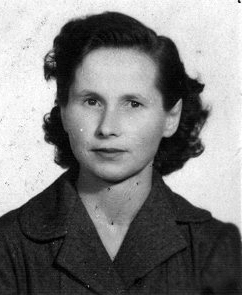
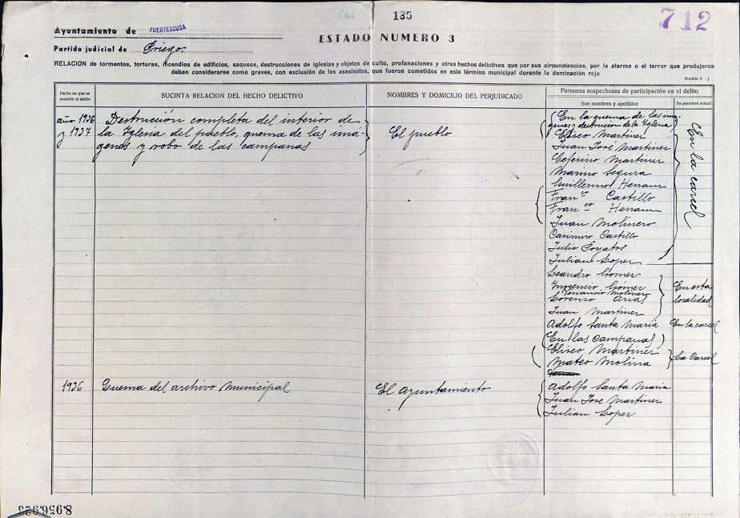
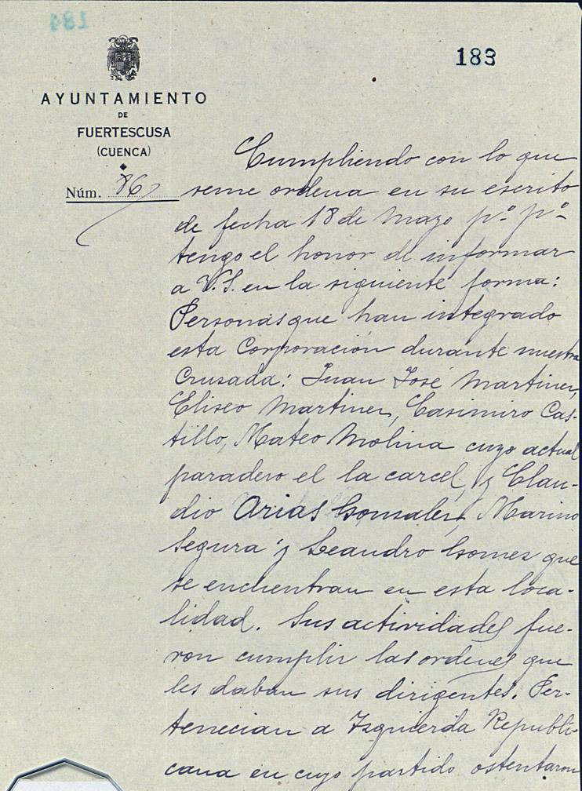
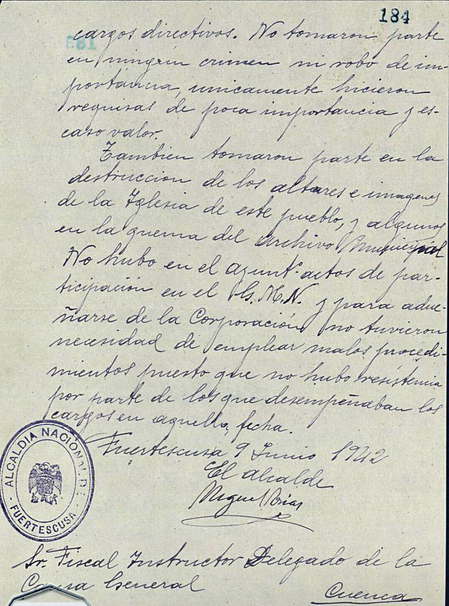
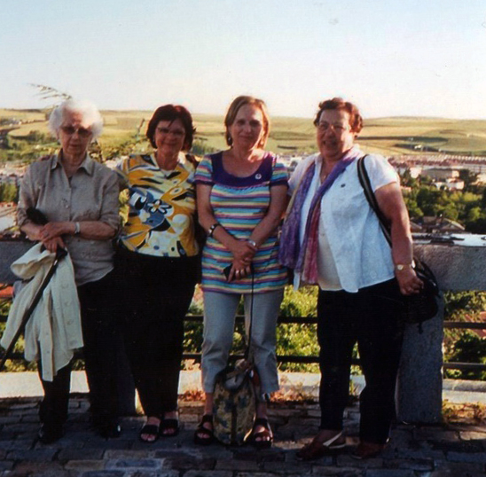
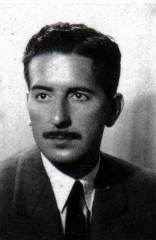
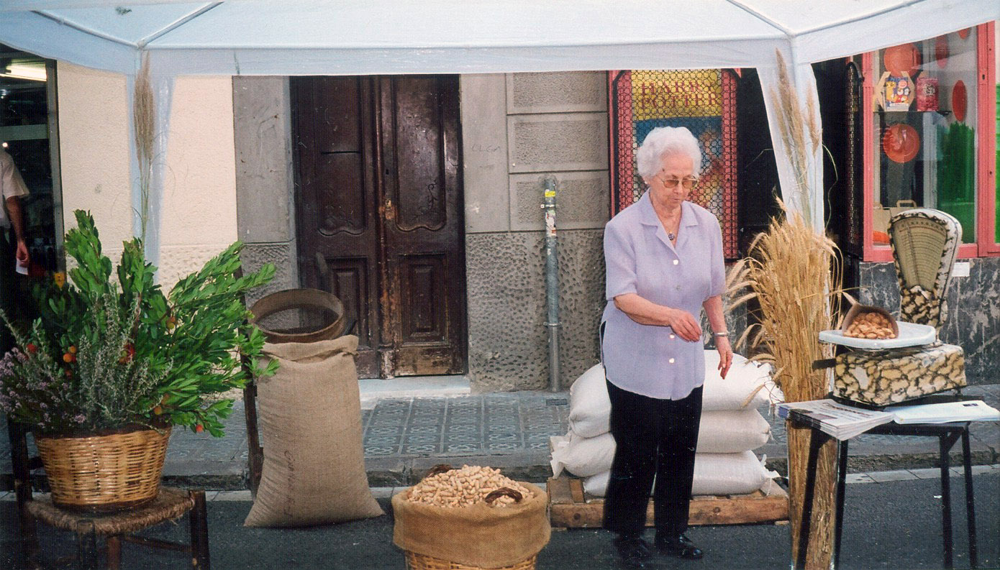
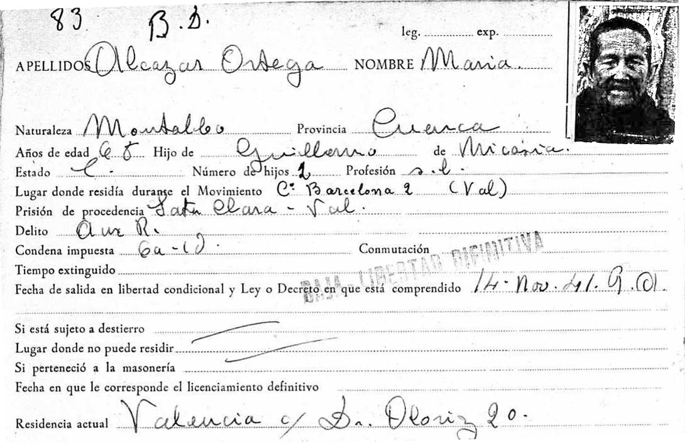
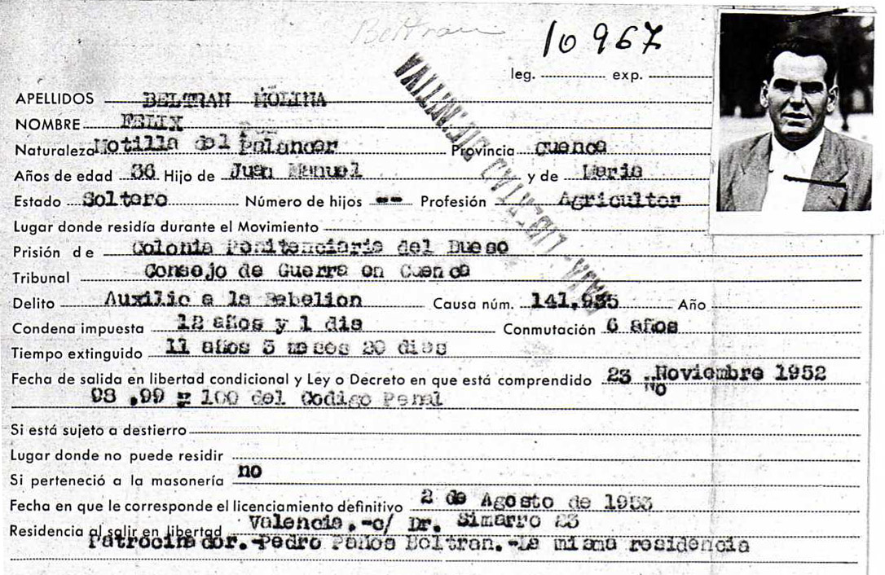
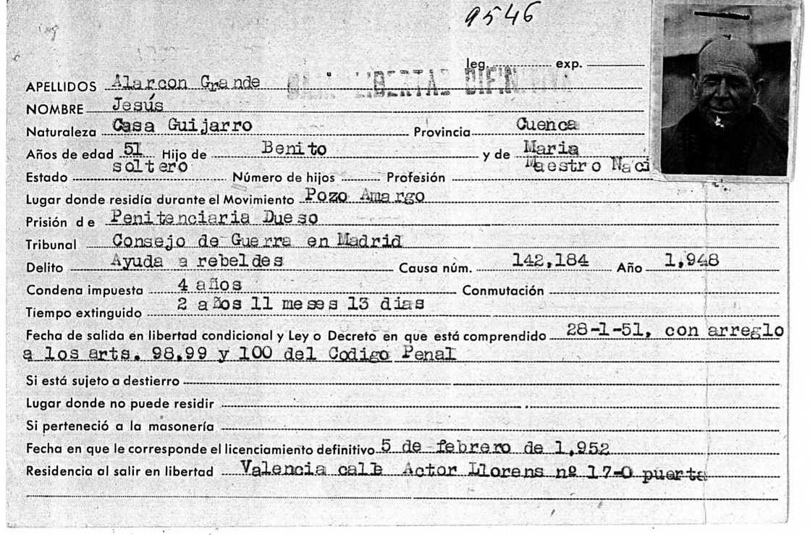

Entrevista realizada a Juliana Martínez Molinera de Fuertescusa, en Barcelona, 22 de noviembre, 2008.
Las mujeres no hicimos la guerra, pero estuvimos detrás de los que la hacían, y es tan importante eso como lo otro, y nuestras madres lo pasaron mal, muy mal, porque claro, las familias eran numerosas y sus hijos eran todos entre pequeños y grandes, como había muchos, pues había de todo, y las madres lo pasaron mal porque no había nada…
Yo viví cuando se proclamó la República, me acuerdo bien cuando se ponían los pasquines, y todo, y bueno los años de la República fueron fantásticos, eso que yo era jovencita, pero íbamos al colegio. Allí la gente de izquierda lo pasó muy bien porque estuvieron contentísimos. Yo me acuerdo que los de izquierdas estaban muy eufóricos porque habían ganado, bueno se había proclamado la República, hicieron una comida para todos en Fuertescusa, y estábamos todos los chavales también que éramos unos críos, y se vivía un ambiente muy bueno. Después íbamos al colegio, y en el colegio teníamos un maestro, al principio íbamos separados, pero después al poco tiempo ya íbamos juntos chicos y chicas, el maestro era progre ya en aquella época, y el maestro se llamaba don Bernardo, que hay un trocito de calle en el pueblo, un trocito que aún está. El maestro aquel durante la República nos sacaba al campo a hacer redacciones, a ver las plantas, que conociéramos un poco la montaña y todo eso, y después, por el mes de marzo, me parece que era marzo, plantábamos un árbol, hacíamos la fiesta del árbol y cantábamos una canción muy bonita:
“Es la fiesta del árbol, la fiesta/
más hermosa, más culta y social,
la que llena de cantos al niño
la que brinda aventura y da paz”.
y seguía pero ya no me acuerdo más. Era muy bonita, cuando se acabó la guerra lo destituyeron a este maestro, que durante la guerra había seguido dando clase.
En mi familia éramos cinco hermanos, mis padres Ceferino Martínez y Lucía Molinero, y los hermanos Leandro, Justo, Marina, Juliana, que soy yo, y Josefa Martínez Molinero. A mis abuelos yo no los he conocido, solo a mi abuela, madre de mi padre. En casa éramos en total siete. Y bueno, ya cuando se acaba la guerra… En la guerra allí no hubo nada de guerra. No hubo ningún conflicto, lo único que allí pues vinieron un escuadrón de caballería a descansar. Venían de un combate y allí había uno del pueblo que estaba en el escuadrón aquel y estuvieron unos cuantos días, y en cada casa había un caballo y se cuidaba del caballo y del jinete, aquel (el que estuvo en mi casa) era de Granada o de por ahí y después nos escribía porque estaba contento, y después ya se fueron y vinieron otros de la quinta del biberón, chicos que tenían 16 y 18 años, jugábamos con ellos a saltar a la cuerda, figúrate cómo era, y bueno también estuvieron unos días y se fueron y estos fueron al frente de Aragón y allí se ve que casi todos fallecieron.
De mi familia mis dos hermanos mayores se tuvieron que ir enseguida porque ya tenían la edad de las quintas. Quedó mi padre y nosotras que éramos tres hermanas, pero yo tenía 10 años, mi hermana la mayor tenía 12 y mi hermana la pequeña cinco menos que yo, luego éramos más bien pequeñas. En la tierra no podíamos trabajar porque no había medio para poder trabajar. Y bueno, se acaba la guerra y uno de mis hermanos viene al pueblo, que venía lleno de sarna, que le costó a mi madre mucho hasta que le pudo curar todo aquello, pero el otro hermano que era más pequeño que éste no llegó al pueblo. Estaba por aquí, por Figueras, y se pasó a Francia, como muchos.
Entonces mi hermano, éste que se pasó a Francia, estuvimos mucho tiempo sin saber de él. Yo de las fechas no me acuerdo, entonces un día recibimos una carta desde Francia y decía que se quería venir, y bueno que le hicieron un pase ambulante, que entonces se llamaba pase ambulante, y mi padre dice: “Bueno, como me lo pide tengo que ir a hacérselo, dice, pero este chico no llegará al pueblo”. Y bueno fue a las autoridades, fachas, y les dijo a lo que iba y sí que se lo hicieron. Y decía, como persona buena, pero de ideales izquierdistas él y toda su familia. Ya fue suficiente para no dejarle venir. Sí, pasó otra vez a España, pero los llevaron aquí a Lérida, y dice que era un sitio que se llamaba las Flechas Negras, porque yo luego leí algo en un periódico, y aquello que no guardas, pero leí que había esto de las Flechas Negras. No sé si era un campo de concentración, porque estuvieron poco, se ve que allí estuvieron poco, pero claro venían desnutridos, venían, nada, sin comer, y se ve que los tuvieron en un sitio muy húmedo. Y mi hermano cogió una enfermedad, que ahora no me acuerdo como se llama, una especie de tuberculosis, que no era tuberculosis, que se ve que no pueden operar. Bueno, lo trajeron al hospital militar de aquí de Barcelona. Pero pasó mucho tiempo hasta que supimos dónde estaba y todo eso, y también nos mandaron a decir que estaba aquí en Barcelona, ¿pero quién venía a verlo desde Fuertescusa, si no teníamos ni cinco?
Mi padre ya estaba en la cárcel. Lo habían metido porque era rojo. La guerra no la hizo porque era ya mayor, pero sí estaba de Ayuntamiento, tenía un cargo. Allí en la guerra no pasó nada, no metieron a la cárcel a la gente de derechas, a nadie, sí se quemó la iglesia, no se sabe quiénes eran, pero de las columnas anarquistas, de esa clase de gente, porque les dijeron, bueno o nos dais las llaves u os matamos a todos. Y qué tenían que hacer, pues dar las llaves ¿no?, y bueno, luego les hicieron arreglar la iglesia a todos los de izquierdas.
(Acoto aquí las palabras emocionadas y vivas de Juliana para, siguiendo la Causa General referente a Fuertescusa incorporada a la Pieza del partido judicial de Priego, destacar que no hubo derramamiento de sangre. Así lo realza en su primer informe el 19 de octubre de 1940 el primer alcalde franquista Miguel Arias, y el secretario Julián Gómez. En una segunda ampliación se le pide que indique quiénes componían la Corporación municipal y su grado de participación en los hechos también calificados como delictivos, a saber, la destrucción de las campanas, la quema de imágenes y altares, y la del archivo municipal. Esta nueva ampliación de informes con finalidades de una nueva oleada oficial de represión se recibe el día 18 de mayo de 1942 y se contesta poco después, el 9 de junio. Concejales y alcalde pertenecían a Izquierda Republicana, y el actual regidor se limita a nombrar a Juan José Martínez, Eliseo Martínez, Casimiro Castillo y Mateo Molina (los tres en estas fechas en prisión) y a Claudio Arias González, Mariano Segura y Leandro Gómez (quienes residen en Fuertescusa). En realidad, en el primer informe timbrado del año 1940 se daba cuenta de la totalidad de los hombres del pueblo que, con la llegada y la presión de los milicianos de la Columna Rosal, en el año 1936, habían estado presentes en las acciones de destrucción de los enseres e imágenes religiosas. Se citaba allí a Eliseo Martínez, Juan José Martínez, Ceferino Martínez, Mariano Segura, Guillermo Herranz, Francisco Castillo, Francisco Herranz, Juan Molinero, Casimiro Castillo, Julio Poyatos y Adolfo Santa María (todos ellos, a imagen repetida de cada uno de los pueblos provinciales, se hallan ya en prisión). De Julián López se desconoce su paradero, y se encuentran en libertad residiendo en el pueblo Leandro Gómez, Inocencio Gómez, Venancio Martínez, Lorenzo Arias y Juan Martínez. En 1937 serán las campanas las que se saqueen, al igual que en otras muchas localidades, reutilizándolas en fundiciones como material de guerra. En esta ocasión participan Eliseo Martínez y Mateo Molina (ya en la cárcel); y por lo que se refiere a la quema del archivo municipal se acusa a los ya citados Adolfo Santa María, Juan José Martínez y Julián López. Todo ello puede leerse en los documentos incluidos en este apartado).
Volviendo a mi hermano, un día se presentó un sanitario a entregarlo a la familia y a las autoridades como que aquel chico estaba enfermo y se iba a morir, y bueno, como mi padre ya no estaba, fue un tío, hermano de mi padre, a hacer presencia al ayuntamiento, y el chico este que fue a llevarlo era de aquí, catalán también, estuvo tres días en casa, y bueno les dijo a los del ayuntamiento, este chico son ustedes los culpables de que se muera, porque es un infeliz. Si mi hermano no había ido nunca a ningún sitio nada más que a guardar ovejas, qué persona podía ser de derechas ni de izquierdas ni de nada, pero claro se vengan en los padres; bueno, total, que mi hermano duró pues bastante tiempo, duró en casa enfermo, no teníamos medicamentos, no teníamos comida, no teníamos nada, es que era pura miseria, y si encima estabas enfermo, tú me dirás. No nos ayudaron en nada. Figúrate que a mi madre le hacían ir a lavar la ropa, porque antes lavábamos por la calle, había unas regueras así por la calle, le hacían a mi madre ir a lavar la ropa de mi hermano y la nuestra. ¿Qué no estábamos todos revueltos en casa, pues le hacían ir a lavar la ropa de mi hermano a un arroyo, más abajo, que teníamos una huerta, unos huertos, y allí mi madre tenía que ir a lavar la ropa, no nos dejaban lavarla donde todos, ¿es que nosotros no nos podíamos haber contagiado de vivir con mi hermano?, mira qué poca... tienen, ¿eh? Bueno, total, que se murió, estuvo bastante tiempo y de una manera terrible porque no había nada, es que no había nada, no había para comer. Tendría unos veinte años y poco más. Mi hermano mayor era de la quinta del 36 y se debían llevar un par de años si acaso, o sea que jóvenes, eran jóvenes.
En casa no teníamos nada, sólo lo que se criaba en los huertos, no teníamos nada más. A mi otro hermano no le pasó nada, se ve que se pudo escapar y poco a poco llegó al pueblo. Con mi hermano el mayor no se metían, pues ya se metían con el padre, pues mi padre antes de llevarlos a la cárcel venía la guardia civil y “mire, por parte del alcalde que baje al ayuntamiento”, y claro ya te ponían la carne, porque que sabías a qué tenían que ir al ayuntamiento. Se llevaron presos a 16, relacionados con el ayuntamiento y los sindicatos. A algunos se ve que sí que les pegaron, allí en el ayuntamiento, lo que pasa es que yo como ya no estaba allí perdí un poco el hilo de lo que pasaba todo aquello. Luego cuando volvieron ni les hicieron juicio ni nada, si es que no había motivo, no habían matado a nadie, se habían ido a los nacionales tres personas, las familias quedaron allí y nadie se metió con ellas, y cuando vienen denuncian a aquellos 16, y los llevan a la cárcel, ¿qué motivo había?, no había ningún motivo, porque si alguna cosita hubiese pasado era un acto de guerra, y en un acto de guerra pierden todos. Los citaron para ir a Priego y ya se los quedaron allí. Y a mi madre le dicen: “Bueno, que lleve una manta, pero es para hacer unas declaraciones”, y después los llevaron a Cuenca, y en Cuenca estuvieron bastante, pero después se los llevaron, a mi padre se lo llevaron a Toledo, y no sé si primero a Uclés, no me acuerdo bien si primero fue a Uclés y luego a Toledo. Estuvo pues un año y medio, pero ni les hicieron juicio ni nada, porque es que no había motivo, ¿qué motivo había?, ninguno.
Cuando vinieron al pueblo tenían que ir cada día al alcalde a decir buenos días o buenas noches, no sé si era por la mañana o era por la noche cuando iban, y cuando el alcalde ya se cansó de que fueran allí, pero no estaban controlados ya que en el pueblo todo el mundo se conocía, qué se iban a escapar, ¿adónde se iban a escapar?, la cuestión es que cuando se cansaron de que fueran les dijeron que ya no fueran, y entonces tenían que ir a Priego, que hay 16 kilómetros, a la guardia civil, una vez al mes, hasta que también se cansaron y dijeron: “Bueno, ya está bien”.
Cuando estaban en Cuenca presos, pues resulta que ellos comían mal, ellos también comían mal, todos comíamos mal, pero hicimos una especie de comuna, y entonces fuimos cuatro mujeres del pueblo a hacerles comida allí en Cuenca, porque allí unas tenían familia otras unos amigos, y dos mujeres estaban en una familia y otras dos con unos amigos. Y bueno, pues allí se hacía la comida, pero desde el pueblo nos tenían que mandar lo que tenían, y bueno, estas mujeres también nos íbamos turnando, yo también estuve, yo tenía 13 años. Hacíamos la comida para todo el grupo de presos de Fuertescusa, ellos lo pasaban mal, pero nosotras lo pasábamos peor. Iba también Marceliana, que aquí tiene un hijo. En las casas que estábamos también lo pasaban mal, pero como también eran gente nuestra, pues lo pasábamos allí todos. Hacíamos la comida por la mañana, temprano nos levantábamos, porque como era a base de cocer, judías y cosas de estas, y todo con carbón, pues tenías que levantarte temprano, y allá ¿qué te diré yo?, ya no me acuerdo del horario que teníamos de subir. Allí había un autobús, pero como no teníamos dinero teníamos que subir andando, tú ya sabes Cuenca cómo es, estábamos en Carretería, abajo, y teníamos que subir con la cesta de la comida toda la cuesta arriba hasta el Seminario, que estaban allí, y al llegar al callejón antes de la explanada del edificio no te dejaban pasar, tenías que estar abajo en el callejón y subiendo de una en una, y cruzar la explanada aquella que hay a unas taquillas que había y allí dejabas la cesta. Entonces ya te daban otra del día anterior, y al día siguiente lo mismo. El jueves tenías que ir a llevarles la ropa. Comunicabas con ellos, pero de qué manera, que no te entendías de nada. Y un frío que hacía en invierno, la gente allí se rompió brazos y piernas, porque como nevaba y luego helaba y no tenías dónde cogerte, pues un desastre. Luego bajábamos otra vez andando igual, y de comer poquísimo.
De mi pueblo había una familia que tenía presos a dos cuñados y dos sobrinos, que ésta los denunció un tío y un cuñado de ellos. ¿Tú conoces a Álvaro que ha sido secretario del pueblo? Había uno que se llamaba Claudio Arias, otro que era mi suegro Eliseo, el abuelo de Paco, mi sobrino por parte de mi marido, a quien tú conoces, y un hermano que también les desapareció, y había otro que se llamaba Marino, y del apellido no me acuerdo, que todos esos eran familia.

Aquella reata de mujeres era una visión tristísima, porque con las caras que teníamos de no comer, que la gente iba hablando sola, y con la miseria, mal vestidas, y mal calzadas y mal de todo, es que era un desastre aquello. Yo, por ejemplo, me turnaba con mi hermana Marina, a veces estaba ella y a veces estaba yo, para que no fuera tan pesado, y las cosas que nos mandaban desde el pueblo, teníamos que ir desde el pueblo a donde pasaba el coche de línea ocho kilómetros, y allí a esperar hasta que pasaba la camioneta que bajaba de Beteta, la Campichuelense, que bajábamos al cruce del puente de Cañamares. Allí, si era pronto, teníamos que encender un poco de fuego porque nos helábamos de frío. A veces bajábamos a la hora y ya había pasado porque era…, un jaleo.
Yo, al colegio, ya no fui más, y entonces fue cuando nos vinimos aquí a Cataluña, después de haber pasado todo eso de la guerra, de mis padres, y de mis hermanos que quedaron de esta manera, pues, mi marido se vino un año antes que yo, yo me vine el año 1945, mi marido en 1944, se llamaba Gerardo Martínez, éramos todos Martínez.
En la historia de la familia de mi marido tenían unos episodios parecidos a los míos, mi suegro también había estado en la cárcel, también habían perdido a un hijo, de enfermedad pero a consecuencia de la guerra y éste ni siquiera llegó al pueblo, estaba en Lorca, mi suegro fue a verlo alguna vez, pero luego ya no se supo dónde estaba enterrado, y ahora allí en el cementerio no había nada de la guerra como si no hubiera pasado nada en la guerra, y había desaparecidos y muertos como siete u ocho, pero allí sólo había la placa en la puerta de la iglesia, donde ponía José Antonio Primo de Rivera y Sebastián Segura, que era facha, presentes, y los demás como si no hubiera pasado nada, y yo digo: “Esto es intolerable que no haya nada en el ayuntamiento, tiene que haber algo”, pero claro para reunir a la gente de los desaparecidos era un poco tarde porque ya habían pasado años, y eso cuesta también, y entonces pensé, mira pues yo voy a ir al pueblo y voy a poner un recordatorio de esto, entonces se lo consulté al Bielsa, pues como ellos han puesto tantas placas por todo, y dice sí, sí, ponerlo, sin ningún problema; dice, mira puedes poner a la memoria de Justo Martínez Molinero, que es como se llamaba mi hermano, mi cuñado se llamaba Eliseo Martínez Molinero, que parecen hermanos, mucha gente piensa que son hermanos, y entonces, a la memoria de estos dos, dos víctimas más de la guerra, 1936-1939, y está allí puesta, y la pusieron en vez de ponerla como están en el suelo, la pusieron como una placa en la pared, que es encima de donde está mi suegro, y Paco entonces era alcalde del pueblo, y no tuve ningún problema, fue y la puso él, porque yo ya no podía ir a ponerla, y allí está puesta. Con esto no es que yo ya vaya a hacer ninguna cosa, pero hay algo de memoria. Y claro, mucha gente va y dice…
 
Después, cuando nosotros vinimos aquí… en el pueblo ya éramos novios. En el pueblo mi marido no tenía vida, trabajo. Su padre era de los que transportaban resina. La transportaban de un sitio a otro y la llevaban a la fábrica que estaba en Cuenca, venían camiones y se la llevaban. Entonces, claro, como no había nada más, tenían que hacer aquello, pero mi marido no sabía hacerlo, el padre le decía que es que no quería, pero él le contestaba que es que no sabía hacerlo, afilar las hachas aquellas que son muy así, no sabía hacerlo. “Es que tu hermano Teófilo, -que ya murió-, aquello lo hacía bien”; dice: “Él lo hace bien porque sabe, ¿pero usted cree que yo que lo tengo que hacer lo haría mal?, si supiera lo haría bien porque para mí es más fácil”. Total que como no había nada más y dijo, pues bueno, yo voy a probar a ver. Aquí en Barcelona había unos tíos, que él estaba desterrado después de la guerra a 300 kilómetros, y aquí en Barcelona había una familia de antes de la guerra, y eran sobrinos, se llamaba Guillermo el tío de mi marido desterrado, que en el pueblo tenían una especie de bar y un gramófono con el que hacían un poco de baile, entonces le escribió a la sobrina esta diciéndole si se podía venir aquí, y la sobrina le dijo que sí, que se podía venir, pero que a su casa no porque, es verdad, tenía una especie de barraca. Había una cocinita y un comedor junto, y dos habitaciones, y eran padre e hija, entonces era imposible vivir alguno más. No estaba a las afueras estaba aquí arriba en Valtealquer, entonces le dijeron que le buscarían una pensión y que se viniera, y se vino, y con relación a que se vino aquí el tío, luego se vino mi marido aquí también, y después me vine yo, y allí vivimos en casa de estos tíos un tiempo, pero también en unas condiciones…, era un piso, y éramos siete, estaba casado y tenía tres hijos, y nosotros dos siete.
Estuvimos en su casa un tiempo, y este tío de mi marido tuvo amistad con unos que vivían en una torre en el Parque Güell, y se ve que le propuso si nosotros nos podíamos ir allí: “Bueno, sí, se pueden venir de masoveros, para cuidar la casa”; y claro, sí accedimos porque ya dejábamos a los otros más desahogados, y nos fuimos, pero mira en qué manera nos fuimos. Fuimos a vivir a un garaje, porque la torre era la torre, no había váter, no había cocina, había dos habitaciones que la una estaba cerrada y teníamos una sola, nos hicieron una especie de cocinita, así, pero sin llegar al techo y un váter, eso era imprescindible de tener, y al lado mismo había un lavadero, era un cuartito que era un lavadero, y allí hasta que nos hicieron la cocinita guisaba con un hornillo de carbón. Bueno, y yo les hacía la limpieza de la casa y les iba a comprar algunas veces, otras no, y no nos cobraba nada, aún nos tendrían que haber pagado, y mi marido trabaja en la construcción. La familia Ballester era la propietaria de la torre. Allí estuvimos bastante tiempo. Allí nació mi hijo, mi hija ya no nació allí. Ellos sí se portaban bien conmigo, pero yo también me tenía que esforzar mucho, porque ya cuando vino mi hijo, tenía que llevarlo, entonces no había carritos.
Mi marido trabajó en la construcción mucho, muchísimo. Iba a la construcción, después en las horas libres que tenía iba a una peletería, después antes de irse al trabajo iba a limpiar una granja que había al lado de la torre donde vivíamos, que tenían animales, o sea que todo esto lo hacía en horas que en la construcción no estaba. Estaba en una pedrera, hacía cimientos para las casas, miraban donde había agua en los pozos… Aquello ya se fue normalizando. Entonces, yo allí me encontraba a gusto, pero para subir allí había un pasaje y una carretera y unas escaleras que no sé si eran noventa, tenías que subir o dar la vuelta a la carretera, y claro, todo era pesado, y cuando ya tuve al niño tenía que ir con el niño en un brazo y la bolsa de la compra en el otro, llegaba a casa...
Barcelona entonces era una ciudad muy triste, porque mira no había nada de comer tampoco, lo que encontrabas era en algunos sitios esporádicos, toda la gente iba allí, hubo una temporada que había higos, había avellanas, había almendras, esto a lo primero de llegar yo a Barcelona, todo con cartillas de racionamiento, que recogías en Abastos. Nos daban 150 gramos de pan, unas barretitas así que no eran de harina, que no sé de qué las hacían, yo iba al horno a comprarlas que estaba bastante lejos de allí porque, claro, aquello era ya montaña como si dijéramos, era parque, además teníamos un cuñado con nosotros, que vivía también con nosotros cuando nos fuimos allá a la torre; y bueno, para ellos compraba la barrita del almuerzo, que ya era la del racionamiento, y luego compraba dos más, una para comer y otra para cenar, pero yo con una ya tenía bastante. Cuando iba a comprarla al horno me la iba comiendo así a tropezones, y cuando llegaba a mi casa ya no tenía nada. Y ya me había quedado como si no hubiera comido hasta el día siguiente, y al día siguiente igual, porque aquellas barritas de estraperlo valían tres pesetas cada una, y claro no llegaba para más, total que después ya nos fuimos de allí, de la torre. También aquí cerca había un colmado que tenía fideos, que a saber de dónde los habían sacado, y allí íbamos a comprarlos, pero cuando se le acabaron, pues ya no tuvo más. Entonces comíamos boniatos, ahora son patatas, pero entonces eran boniatos, que eran buenísimos, pero claro tanto boniato también te cansa, después harina de almortas y gachas. Esto sobre todo cuando llegamos a Barcelona y vivíamos con mi tía. Comprábamos en los mercaditos que era más barato, pero ya verás qué calidad.
En Barcelona vi el cine por primera vez, que por cierto no me gustaba mucho el cine. La primera película fue Cumbres Borrascosas, me pasé llorando toda la tarde, esto fue en un cine que ya no existe que estaba en la calle Mayor de Gracia, en el Roxi, junto a la Plaza les Ses. Había el Roxi, había otro aquí más abajo que hacían varietés, que eran bonitas, y en el cine Roxi estaba enfrente de mi casa, y en el invierno dejábamos a los niños en la cama y nos íbamos al cine, y a media sesión mi marido iba a ver cómo estaban.
Mi marido ya estaba muy metido en política pero yo no lo sabía. Nunca me contó cómo ingresó en política en el PSUC clandestino. Cuando salió de la cárcel ya se puso enfermo y de lo que menos tenía gana era de contar cosas, que además era peligroso saber mucho, por la policía. Había contactado con uno que vivía aquí cerca. A él no lo llegué a conocer, pero en la casa que estaba sí que los conocía. Era periodista, en la clandestinidad. Éste era el que se entrevistaba con mi marido, pero no sabían nada el uno del otro, no sabían ni cómo se llamaban, ni en qué trabajaban ni dónde vivían, nada. Y claro, cuando los cogieron, éste dio el nombre de mi marido pensando que no tenía mucha relación con el partido comunista, pero sí que la tenía…
Mi cuñado que vivía con nosotros se puso en relaciones con una chica que era gallega, su padre gallego y su madre navarra, pero como también se puso enfermo, ya tenían cosas compradas para casarse, y vivían en Galicia. Eran dos hermanas, y muy jóvenes se vinieron a servir aquí a Barcelona. Una de ellas se puso en relaciones con mi cuñado, y cuando se puso enfermo ellas que tenían una hermana casada en Bilbao se murió de parto al dar a luz a una niña, y a su madre que vivía en Galicia y estaba muy enferma no se lo dijeron. Cuando volvieron del entierro nos dijeron si sus padres se podían venir a vivir con nosotros pues nuestra casa de la Plaza de las Sas era más bien grande, y no les pude decir que no porque la que fue novia de mi cuñado se había portado muy bien con él cuando estuvo enfermo, todos los días le traía algo de comer, una rodaja de pescado, un bistec, pues era cocinera en la casa donde servía. Me dijo: “Esto que le traigo no se lo robo a la señora, es que como voy a los sitios a comprar me hacen un descuento, y de este descuento se lo traigo a él”. Y estuvieron con nosotros mientras se hacían una casa en un terreno que tenía un tío suyo. Tenían un chico de unos diez años, con los apellidos de los abuelos, aunque en realidad era hijo de una de estas dos hermanas que sirviendo en Galicia habían abusado de ella.
Nos cambiamos de casa a la Plaza de les Ses, aquí arriba, allí teníamos un piso que no era ni pequeño ni grande, estaba bien, pero viejo más bien, en alquiler. Y este piso lo pagaba el Partido, pues a mi marido le dijeron de poner allí una Minerva, que antes había estado en casa de un matrimonio, por allí por Colón, y que más tarde se mataron en un accidente, y tenía que venir uno a mi casa a trabajar con ella, para la propaganda, pues claro el Partido lo pagaba, pero yo de todo eso no sabía nada. Él fue, mi marido, el que me dijo de cambiar de piso, y claro como lo necesitábamos pues no ibas a decir que no. En aquella época pagaban poco. Mi cuñado se llamaba Teófilo y mi hijo Gerardo. Todos nos fuimos al piso. Pusieron una Minerva pero no llegó a funcionar porque cogieron a Gregorio López Raimundo, mi marido fue del expediente de él, y hubo un grupo de 26 personas, 24 hombres y dos mujeres. Mi marido fue el último que cogieron, porque como éste que se entrevistaba dio el nombre porque pensaba que no tenía mucha implicación, y como ya hacía tiempo que los habían cogido, pues a lo mejor ya no.., pero sí, sí, vinieron y se lo llevaron.
(La huelga de tranvías de 1951 en Barcelona es el referente donde se sitúa la caída de la delegación del CC del PSUC en Barcelona encabezada por Gregorio López Raimundo. Las nuevas tarifas aprobadas por el Consejo de Ministros, tan dispares para Madrid (0,40 pesetas, en tanto que para Barcelona se fija en el doble 0,80) encenderían la mecha ya de por sí caldeada por su base social. Desde el mes de febrero empiezan a circular hojas clandestinas llamando a la movilización y a la huelga a los ciudadanos de Barcelona. Aunque el PSUC se hizo eco de la protesta y la apoyó en sus números del mes de marzo, en Treball, fueron los universitarios quienes a mediados de febrero ya pegaron carteles llamando a la población a boicotear los tranvías y a no subir en los mismos. Del igual modo fueron ellos quienes hicieron las primeas manifestaciones y protagonizaron las roturas de vidrios de los convoyes. La llamada era para no tomar el trasporte público el día primero de marzo. El boicot se mantuvo durante varios días. Las autoridades no tuvieron más remedio que volver a las tarifas anteriores, a partir del día 6 de marzo. La huelga de tranvías tendría su continuación en la de los trabajadores, reclamando aumento de salario para el día 12 y siguientes, y en Euskadi los días 23 y 24 de abril. La propaganda oficial de los medios de comunicación y las declaraciones policiales intentaron relacionar estos movimientos con los comunistas, pero el PSUC no había sido el organizador, aunque desde luego las secundó. López Raimundo “Agustín” había regresado a Barcelona desde Francia en marzo de 1951, como Secretario de la delegación del PSUC. Con Fábregas, José Raventós y Juan Pagés conforma el equipo responsable. En julio lo detendrán, dentro de una cadena de caídas de todo el equipo político y de propaganda. Las detenciones se habían iniciado con la de Domingo Oliveros, y una de las últimas sería la de Gerardo Martínez en cuyo domicilio estaba la Minerva de motor, en la calle Septimania. Nadie había recortado la factura de la empresa que había trasladado la Minerva hasta este último domicilio. Y la factura le fue encontrada a López Raimundo en la habitación donde se hospedada en la calle Teodora Lamadrid, tras unos durísimos interrogatorios, o más bien torturas, de la brigada de la policía de Madrid trasladada a Barcelona para realizar estas detenciones. Todo ello lo detalla el propio Gregorio López Raimundo en sus memorias. En la caída se detendrán a 26 hombres y dos mujeres de las que tan sólo una sería juzgada. Su proceso supondrá una de las mayores movilizaciones internacionales para conseguir que sean enjuiciados por la justicia civil, cosa que no se logrará, pero sí que asistan observadores internacionales. El juicio se celebrará en Barcelona entre los días 2 y 3 de julio de 1952. De una petición de 20 años para el que más, López Raimundo, a una de 6 años para los que menos, para Gerardo se pedían 6 años, la pena quedó en 4 años para los primeros, absueltos cuatro de los detenidos y seis meses y un día para otros nueve, entre ellos Gerardo).
Yo no le pregunté a mi marido por qué o para qué era la Minerva. Mira, es que habíamos pasado tanto, nos habían ido las cosas tan mal, aunque aquí en Barcelona no, aquí nos fue bien, a pesar de los trabajos. Nosotros fuimos emigrantes en nuestro propio país y también se pasa mal. Porque claro, en aquella época te hablaban en castellano, porque el catalán también estaba prohibido, pues nadie te hablaba en catalán, y hemos tenido muy buena convivencia con gente y aún la tenemos, pero se pasa mal porque tienes que trabajar mucho, tienes que estar por muchas cosas, no puedes estar por todo, y yo también era muy joven, yo tenía 19 años cuando me vine, mi marido tenía 35. Él había hecho la guerra, se había hecho voluntario. Estuvo los tres años de la guerra. Luego estuvo haciendo la mili otros tres años, en Asturias, y luego aquí en Barcelona, que es cuando los cogieron, cuando la huelga de los tranvías y estuvo en la cárcel. Fue a principios de 1951, estuvo año y medio en la cárcel, y en 1951 fue cuando estuvo en la cárcel.
Mi hijo tenía cuatro años y mi hija tenía dos cuando mi marido estuvo preso. Entonces ya vivían mis padres aquí y mis hermanas. Ya habían venido aquí a Barcelona. Mis padres vivían en unas casas baratas que había del Buen Pastor, que está un poco lejos de aquí y me tenían a uno de mis hijos, porque los dos no los podían tener, mis padres eran mayores también y pocas subsistencias. Entonces me tenían uno, mi hijo, y cogió el sarampión. Y después llevamos otra vez a la niña y volvió a coger el sarampión, mi hija estuvo muy mal con el sarampión, y tenía que ir yo al hospital clínico día sí y día no, porque mi marido seguía en la cárcel, a ponerle una inyección. Iba a lo mejor un día y no tenían la inyección, al día siguiente iba y se la ponían, a lo mejor iba al otro día y no estaba el cirujano, que era quien se la ponía, y desde allí me iba a la puerta de la cárcel con ella en brazos, a veces cogía el autobús si tenía dinero, y si no con la niña en brazos andando. Allí nos juntábamos el grupo de mujeres de los presos. Allí se trataba de ir a los sitios, a las embajadas, a hablar con gente y todo eso, y la hermana de Gregorio era la que lo llevaba y las hermanas de Félix Valero que era otro que también estaba allí, que eran tres o cuatro hermanas y tenían tiempo, y nos reuníamos allí, y decíamos yo haré esto, yo haré lo otro, todas eran muy luchadoras. Yo no podía hacer nada, porque con la niña y el trabajo, pero me enteraba de lo que se tenía que hacer. Yo lo pasé entonces también muy mal con mi hija, porque yo pensaba que se moría. Porque un día le dije al doctor: “Doctor, es que mi hija no adelanta nada”. Dice: “¿Se ha cansado ya usted de venir?” Yo le dije: “No, yo no me canso de venir mientras que vea que mi hija lo necesita”. Dice: “Porque esta inyección que le ponen a su hija vale cien pesetas”; y era día sí y día no, ¿quién tenía cien pesetas para gastar así en medicinas? De aquello fue mejorando pero le salía otro bulto en la otra parte del cuello, entonces trataron de quitarle las anginas, y tuvieron una reunión los médicos y quedaron que se las quitarían, eran unos hilos como de coser. Tuve que ir mucho tiempo allí, y al final se curó, iba al Clínico.
Volví una temporada al pueblo con mis niños, en verano, porque tanto mis suegros como mis padres vivían en Fuertescusa. Y un día vino un médico y preguntó por la niña, cuando ya había pasado mucho tiempo, querían volverla a ver cómo se encontraba. Cuando volví a Barcelona, ya mi marido había salido de la cárcel y volvió a trabajar en la obra, me lo dijo y fuimos al Clínico, la miraron otra vez y le dijeron que estaba perfecta. A mi marido desde Barcelona lo llevaron a Ocaña. A Gregorio le dieron unas palizas que no sé como las aguantó, y a Núñez hasta lo colgaron, a Núñez lo cogieron antes. A mi marido ya no le pegaron, porque como fue el último ya deberían de estar cansados de dar palos, o no sé. Les hicieron un juicio ya no militar. Había tres o cuatro abogados, vinieron representantes de Inglaterra, de Francia, para observar. Entre civil y militar, se ve que tenía que ser un civil y dimitió. Había algunos que eran buenos, sí, pero claro era un juicio, “usted aténgase a lo que le preguntan”. No les dejaron hablar. Yo estuve en el juicio y lo recuerdo bien. Lo hicieron en una salita pequeña, aquí, en el gobierno militar. Pero ya fue un juicio que duró tres días. Fuera hubo mucha presión, mucha presión, pidieron su libertad, porque es que a Gregorio aquí en España lo conocía poca gente, pero en el extranjero lo conocía mucha gente. Alguna de estas cosas me enteré después leyendo las memorias que ha escrito el propio Gregorio.

A Gregorio, cuando estaban en Ocaña, dice que recibían una saca de correspondencia pidiendo la libertad de este grupo, y claro, había presión para todo eso, y con el tiempo se fue mirando de gente que podía ayudar, y sí se hizo un juicio no como tendría que haber sido. Les acusaban de haber sido los promotores de la huelga de los tranvías, una huelga que no se ha visto, que la gente respondía, y en invierno que nevaba, la gente iba andando y no cogían los tranvías, y decían que habían sido ellos los promotores. Pero no habían sido ellos, y en uno de sus libros Gregorio lo explica. Habían sido los estudiantes de aquella época, que eran unos estudiantes del Régimen, pero ellos eran quienes lo habían promovido. Éstos, claro que se adhirieron a la huelga, pues faltaría, ¿no?, pero se lo cargaron a ellos porque eran comunistas. Pero ya salieron, y a Gregorio lo desterraron, pasó por Cuba, y me parece que se fue a México, después a otros les echaron unos cuantos años, mi marido seis años, pero al año y medio ya lo soltaron con otros. Estuvo en Ocaña y en Barcelona.
Yo seguía viviendo en el mismo piso que en principio pagaba el Partido, pero una vez detenido mi marido ya lo pagábamos nosotros. Aunque luego tuvimos que irnos de ese piso de la Plaza del Ses, porque ensancharon la calle y derribaron esa finca, desahuciaron todo aquello, y ya nos vinimos a éste donde ahora estamos en la calle Pere Serafí. Pero no te creas, hemos ido bajando, en cuesta, pero nos costó mucho aquí, pues mi marido al salir de la cárcel ya se puso enfermo y fue una enfermedad muy dolorosa y muchos años, porque trabajó mucho tiempo casi sin poder, pero luego ya no pudo.
Cuando salió de la cárcel siguió, si no militando en el Partido Comunista, sí viéndose con algunos. Muy vigilado ya no estaba pero tenía que tener cuidado. Leían mucho, escuchaban la radio, estaban muy al tanto de todas las noticias. Mi marido era político, pero mi padre también era muy político. Al final mi marido salía poco porque ya estaba muy enfermo, y mi padre vivía conmigo porque mi madre se murió, y también venía uno, José María Nebot se llamaba, que era un militante de aquellos buenos. Él repartía mucha propaganda, iba por todo, por Hospitalet, por San Andrés, y no cogía nunca un tren ni un tranvía, siempre iba andando. Éste vivía también cerca del Parque Güell. Los domingos se reunían en mi casa, mi padre, mi marido, Nebot y hacían unas charlas, unas tertulias…, porque estaban muy al tanto de lo que pasaba. Mi marido leía una revista que se llamaba Mundo, y salía semanal, y entonces valía 1,50 y luego la subieron a 2 pesetas, y después ya la subieron a 3 o a 5, y ya la dejó. Es que no podías hacer muchas cosas que te gustaban porque no tenías. Mi marido falleció en 1968. Yo no milité hasta que no se legalizó el Partido Comunista, me afilió Nebot. Me dijo: “Ya que tú no puedes ir, -porque estaba todas las horas trabajando-, ya te apunto yo”. A Nebot también lo habían perseguido mucho, había estado en la cárcel, y de maquis. Ya murió. Nebot iba con uno que se llama Ángel Rozas, que ahora es el director del Archivo de Comisiones en Barcelona, que tienen un archivo muy importante. Llamaban la atención, porque Nebot era muy alto y Rozas muy bajito. Y ya al final dijeron: “Oye, nos vamos a tener que separar porque nos van a reconocer enseguida”.
Después cogimos el kiosco, yo he trabajado 35 años en el kiosco. Lo tenía en la Plaza del Ayuntamiento. Allí en el kiosco, claro, no podías hablar nada, porque no sabías quién venía, no conocías a la gente, pero por lo que compraba ya sabías si era de izquierdas o no era, sobre todo cuando la transición. Cuando la transición fue muy importante, porque entonces la gente tenía ganas de saber, y ganas de leer, y como ya las revistas que salían en aquella época eran un poco más abiertas pues claro, cuando venían y te pedían más o menos ya sabías. Había dos chicos que eran periodistas que entonces vivían en el barrio, ahora ya no, y estos periodistas venían y necesitaban, como te pasa a ti, saber y, claro, de dinero tenían poco, porque entonces empezaban, y yo cuando venían les decía. “Mirad, buscad lo que os interese y repasadlo”. Me compraban algo, pero si les interesaba lo leían. Hasta incluso yo tuve un Caso mucho tiempo, que luego se lo llevé a este a Rozas para que lo tengan en el archivo, un Caso que era todo de accidentes, ya ponían Caso ¿no?, y yo también lo repasaba algunas veces y como vi que era del juicio de Burgos y había las fotos y todo el juicio, que me extrañó mucho porque un juicio de esta categoría y ponerlo en el Caso no era normal, y lo he tenido mucho tiempo y un día revolviendo papeles, digo: “Mira, este Caso pues se lo voy a llevar a Rozas y que lo tengan allí”, ya estaba amarillo. Pero cosas interesantes que algunas veces en alguna revista que no te esperas, sale algo. El expediente de mi marido y de todo el grupo también lo tienen allí.
Murió primero mi cuñado, y luego después mi marido, a los dos los tenía enfermos, mi cuñado era más joven. Mi marido ya no podía trabajar porque estaba enfermo, y yo iba a limpiar a un laboratorio, y mi cuñado también estaba enfermo. Miramos de buscar algo que pudiera ayudarme. Había un barrendero que era de Cuenca, también, de Poyatos, Jesús, éste hablaba con el que ya había en el kiosco, y se ve que aquél no tenía familia. El kiosco era un metro cuadrado, allí he pasado frío, ganas de comer, de lavarme, de ir al váter, casi no me quiero ni acordar. El barrendero hablando con aquél se ve que al principio no quería, pero al final se ve que ya quería cerrar, y ya nos lo alquiló, pero casi no se hacía nada, me parece que la primera semana se sacaron 600 pesetas, y le tenía que dar al otro porque era alquilado. Lo cogería siete u ocho años antes de fallecer mi marido que es el tiempo que estuvo enfermo, y luego lo continué yo y mis hijos que eran bien pequeños y ya iban a repartir diarios. Empezaba a las seis de la mañana y a las 9,30 de la noche aún estaba allí. Entonces había serenos y vigilantes y cuando venían a las 6,30 de la mañana, venían y cogían cinco o seis diarios y, claro, eso ya era mucho, y te estabas hasta que pasaban ellos, y cuando pasaban ellos cerrabas, y tenías que plegar todo, porque todo estaba por fuera porque, claro, siendo tan pequeño. Y había unos baños públicos porque, claro, la gente en casa no tenía nada de baños, ni hasta de váteres, y había unos baños que la gente venía y se bañaba el sábado o el domingo, la familia, y él tenía agua caliente, y explicándole que tenía frío que ya veía que tenía frío, pues un día viene y me trae una botella de aquellas de goma con agua caliente, y cuando tenía frío me la ponía en las piernas: era un alivio, me calentaba un poco, pero aquello duraba poco. Después el que encendía la calefacción en el ayuntamiento la encendía con carbón, y entonces me ponía dos adoquines de aquellos a que se calentaran bien y cuando estaban bien calientes me los ponía en un cacharro que tenía y me lo ponía en los pies y aquello duraba más. Los periódicos y revistas teníamos que ir a comprarlo todo. La Vanguardia, que es un periódico que le tengo un asco que no lo puedo ni ver, no la he leído nunca, íbamos a comprarla a la calle Talleres que está allí bajo en la Plaza Cataluña, en las Ramblas, y como eran los que tenían el papel, pues claro tenían Vanguardias, y se las daban a quien querían y nunca había suficientes en los kioscos, y si un día sobraban se las tenían que quedar y ese día no habían ganado nada, habían perdido. Y nosotros estuvimos mucho tiempo sin vender La Vanguardia, porque no podíamos ir a comprarlas, después había uno en la calle Verdi que tenía una escalerita y él iba a por un paquete de Vanguardias y un día nos dijo que si queríamos nos las traía él, y nos traía unas cuantas, después ya salió un periódico que se llamaba el Tele-Exprés, pues aquel nos dio vida a los de los kioscos porque lo traían a los kioscos y se lo llevaban, pues La Vanguardia se vio también obligada a hacer eso, a traerla y a recoger lo que sobraba pero hasta entonces nada. Salió también el Mundo Diario que era de Tele Exprés, que salía por la tarde, más bien un poco femenino para el mundo de las mujeres, que estaba bien. Por las Ramblas vendían los que salían en Madrid, pero por aquí arriba no se vendían esos. Salía Fotogramas que era una buena revista, La Codorniz también era buena, el Barça, otra que ya no me acuerdo cómo se llamaba que también era de futbol, el Once que era una revistita pequeña, no sé si salía alguna más, Garbo que también tenías que ir a comprarla donde La Vanguardia, El Noticiero...
Para venirnos a este piso, mi marido había fallecido en el de Plaza de las Ses, y como el ayuntamiento tiró aquello pues sólo teníamos un año para buscarnos uno nuevo, y no teníamos dinero. Entonces buscando, buscando, nos dijeron de unos en Moncada, pero yo me hubiera pasado la vida en el kiosco y en la carretera, así que seguimos buscando encontramos este que está cerca del kiosco, ya estaba hecha la obra, y aquí nos quedamos.
PD. No es un cierre necesario, pero al hilo de las múltiples referencias destacadas en esta entrevista, bien podríamos señalar la importancia histórica, como represión y como despoblación, el halo del destierro. Y además, en muchos aspectos de idea principal y de aspectos subordinados. Seguramente éstos, desde el ámbito familiar, más importantes numéricamente que otros. Pues la reincorporación al lugar de procedencia suponía más que un estigma debido a la manera tan arbitraria y de dominio al gestionar la posguerra por Falange. No está en mis fuerzas poder realizar este recorrido de investigación. Pero lo dejo en manos de futuros historiadores provinciales necesarios con ritmo de continuidad. Esa que crea y une. Únicamente, como apunte, les señalo que revisen las fichas de los centros penitenciarios de los muchos lugares de emigración de nuestra provincia en los años cuarenta del siglo XX. Y a modo de ejemplo aquí les muestro tres fichas de las cárceles de Valencia.
1º
2º

3º

Y vaya con todo ello mi agradecimiento y memoria a personas como Juliana. Mujeres como ella hacen grande a Fuertescusa y a las gentes de valor.